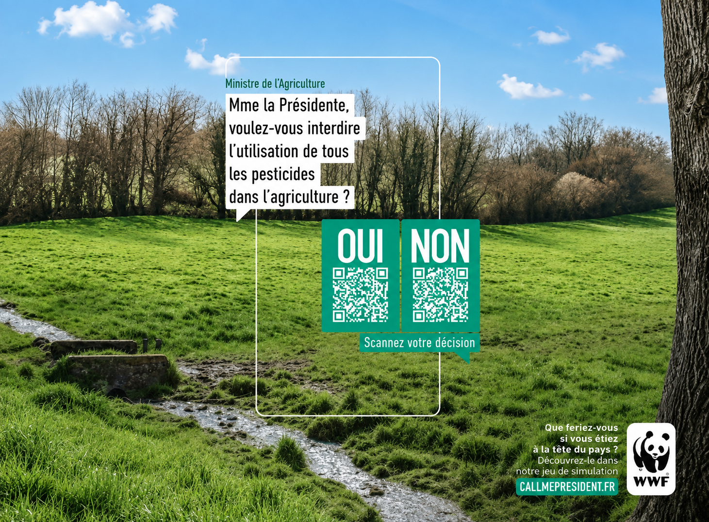
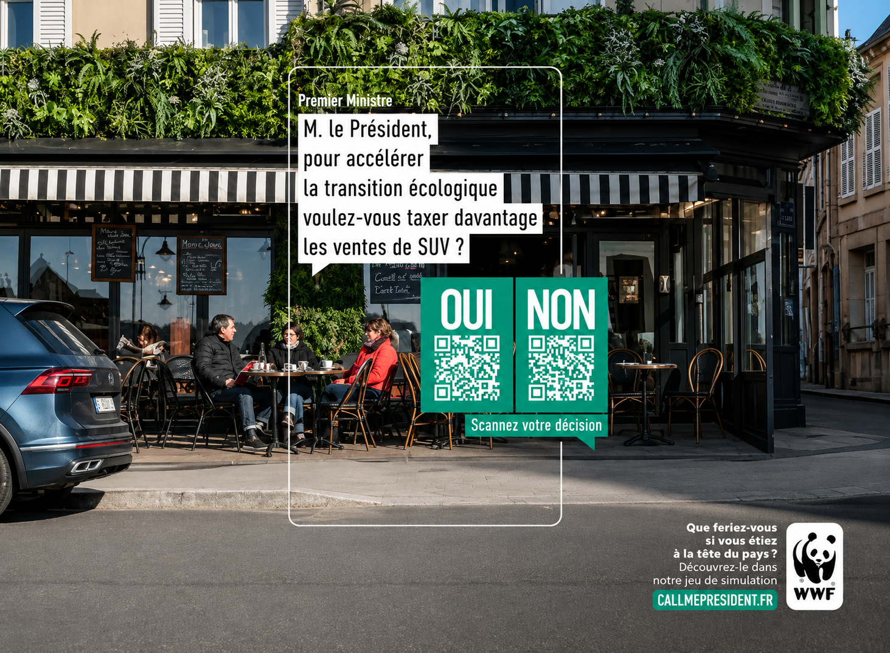
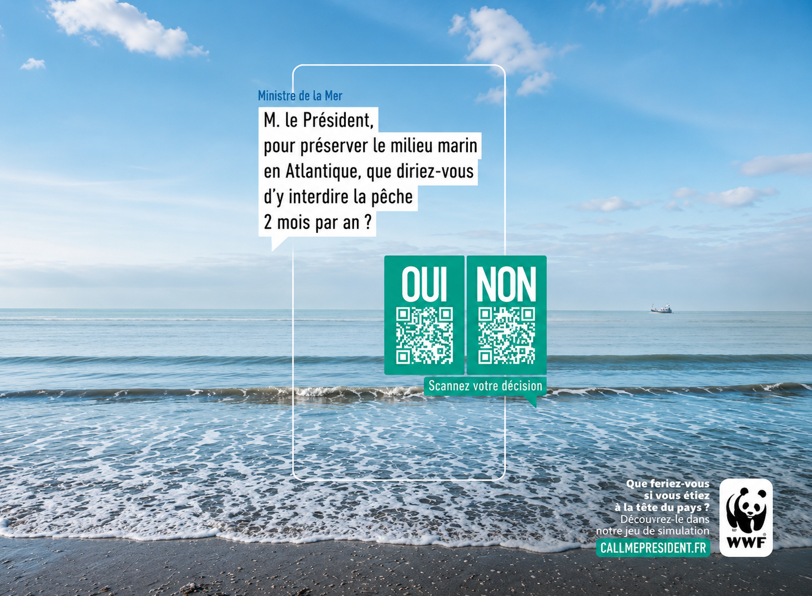
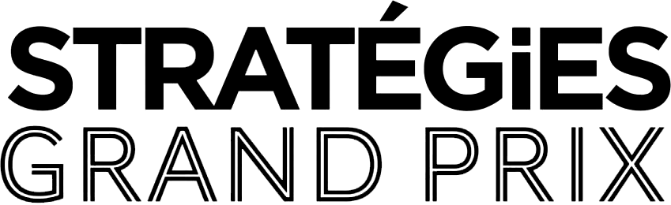

WWF — Campagne 360° — Appel d’offres
Call Me President
Prompt : Une campagne pour montrer aux Français l’impact de chacune de leurs décisions sur notre planète. La prise de parole doit être faite avant les élections présidentielles de 2022, pour que chaque citoyen fasse son choix en connaissance de cause.
...l
Lors de mon alternance chez Steve, avec la team des Daren, composée de Dany Huang et Lauren Hatton, nous avons répondu à cette demande en créant le jeu Call Me President pour WWF France. Un jeu dans lequel le joueur a le téléphone du président entre les mains et doit prendre des décisions pour le pays.
...l
Le but du jeu est d’ouvrir les yeux sur l’impact des décisions politiques sur les espèces, sur l’environnement et sur la planète afin que les Français aient en tête les conséquences que chaque vote peut engendrer.




Argent dans la catégorie Advertainment
Or dans la catégorie Expérience Client
(grandes causes / intérêt général)